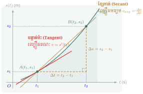
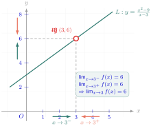
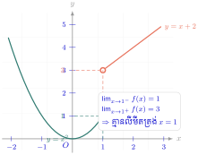
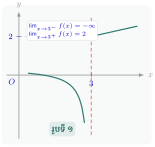
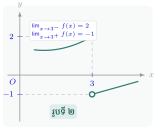
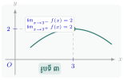
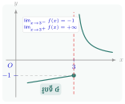
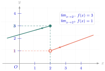

លីមីតនិងដេរីវេ (Limits and Derivatives) នៅក្នុងជំពូកនេះ យើងចាប់ផ្តើមសិក្សាពីបញ្ញត្តិមូលដ្ឋាននៃលីមីត និងប្រមាណវិធីលើលីមីត ដែលជាគ្រឹះដ៏សំខាន់សម្រាប់ឈានទៅសិក្សាបញ្ញត្តិនៃដេរីវេ និងប្រមាណវិធីលើដេរីវេនៃអនុគមន៍។ បន្ទាប់ពីទទួលបានបញ្ញត្តិលីមីត ដេរីវេ និងបំណិនក្នុងការគណនាលីមីត ដេរីវេ ប្អូនៗនឹងអាចប្រើចំណេះដឹងទាំងនោះក្នុងការដោះស្រាយចំណោទបន្ទាត់ប៉ះនឹងក្រាបតាងអនុគមន៍ត្រង់ចំណុចមួយ ការសិក្សាអថេរភាព និងសង់ក្រាប ការគណនាតម្លៃអតិបរមាធៀប តម្លៃអប្បបរមាធៀប ការគណនាល្បឿនខណៈនៃចលនា និងការដោះស្រាយបញ្ហាពិតក្នុងវិទ្យាសាស្ត្រ និងសេដ្ឋកិច្ច។

- កំណត់បញ្ញត្តិលីមីតតាមបែបពីជគណិត និងតាមបែបក្រាប
- រកលីមីតនៃផលបូក ផលដក ផលគុណ និងផលចែកនៃអនុគមន៍
- រកលីមីតនៃអនុគមន៍ពហុធា និងអនុគមន៍សនិទាន (រាង \(\displaystyle \frac{0}{0}, \infty - \infty, \frac{\infty}{\infty}\))
- រកអត្រាបម្រែបម្រួលមធ្យម និងអត្រាបម្រែបម្រួលខណៈនៃអនុគមន៍
- កំណត់បញ្ញត្តិដេរីវេ ដេរីវេទីមួយ និងដេរីវេទីពីរ ព្រមទាំងអនុវត្តរូបមន្តដេរីវេ ។
1. លីមីត
1.1. សញ្ញាណលីមីត
ឧទាហរណ៍ ១ : គេឱ្យអនុគមន៍ \(\displaystyle y = f(x) = x^2 + 2x - 3\) និងតារាងតម្លៃលេខ
| \(\displaystyle x\) | \(\displaystyle x\) ខិតជិត \(\displaystyle 2\) ពីខាងឆ្វេង | … | … | \(\displaystyle x\) ខិតជិត \(\displaystyle 2\) ពីខាងស្តាំ | ||||
| \(\displaystyle 1.99\) | \(\displaystyle 1.999\) | \(\displaystyle 1.9999\) | \(\displaystyle 2.0001\) | \(\displaystyle 2.001\) | \(\displaystyle 2.01\) | |||
| \(\displaystyle y\) | \(\displaystyle 4.9401\) | \(\displaystyle 4.9994\) | \(\displaystyle 4.9994\) | … | … | \(\displaystyle 5.0006\) | \(\displaystyle 5.006\) | \(\displaystyle 5.0601\) |
| \(\displaystyle y\) ខិតជិត \(\displaystyle 5\) ពីខាងឆ្វេង | \(\displaystyle y\) ខិតជិត \(\displaystyle 5\) ពីខាងស្តាំ | |||||||
តាមតារាងតម្លៃលេខ បើ \(\displaystyle x\) ខិតជិត \(\displaystyle 2\) ពីខាងឆ្វេង (\(\displaystyle x \to 2^-\)) និងពីខាងស្តាំ (\(\displaystyle x \to 2^+\)) នោះ \(\displaystyle y\) ខិតជិត \(\displaystyle 5\) ។
គេថាអនុគមន៍ \(\displaystyle y = f(x)\) មានលីមីតស្មើនឹង \(\displaystyle 5\) កាលណា \(\displaystyle x\) ខិតជិត \(\displaystyle 2\) ។
គេកំណត់សរសេរ
ឧទាហរណ៍ ២ : គេឱ្យអនុគមន៍ \(\displaystyle f(x) = \frac{x^2 - 9}{x - 3}\)
ចំពោះ \(\displaystyle x \ne 3\) គេបាន \(\displaystyle f(x) = x + 3\) និងក្រាប \(\displaystyle L\) ។
តាមក្រាបបើ \(\displaystyle x\) ខិតជិត \(\displaystyle 3\) នោះអនុគមន៍ \(\displaystyle y = f(x)\) ខិតជិត \(\displaystyle 6\) ។
គេកំណត់សរសេរ \(\displaystyle \lim_{x \to 3} f(x) = \lim_{x \to 3} \frac{x^2 - 9}{x - 3} = 6\) ។

៖ បើ \(\displaystyle x\) ខិតជិត \(\displaystyle a\) ហើយអនុគមន៍ \(\displaystyle y = f(x)\) ខិតជិតតម្លៃ \(\displaystyle b\) ណាមួយនោះ៖
- ក.
បំពេញតារាងតម្លៃលេខទី ១ និងទី ២ ដូចខាងក្រោម ៖
តារាងទី ១ តារាងទី ២ \(\displaystyle x\) \(\displaystyle 0.1\) \(\displaystyle 0.01\) \(\displaystyle 0.001\) \(\displaystyle 0.0001\) … \(\displaystyle \frac{1}{x}\) … \(\displaystyle x\) \(\displaystyle -0.1\) \(\displaystyle -0.01\) \(\displaystyle -0.001\) \(\displaystyle -0.0001\) … \(\displaystyle \frac{1}{x}\) … - ខ. ទាញរក \(\displaystyle \lim_{x \to 0^+} \frac{1}{x}\) និង \(\displaystyle \lim_{x \to 0^-} \frac{1}{x}\) ។
- ក.
តារាងតម្លៃលេខទី ១
\(\displaystyle x\) \(\displaystyle 0.1\) \(\displaystyle 0.01\) \(\displaystyle 0.001\) \(\displaystyle 0.0001\) … \(\displaystyle \frac{1}{x}\) \(\displaystyle 10\) \(\displaystyle 100\) \(\displaystyle 1000\) \(\displaystyle 10000\) … តារាងតម្លៃលេខទី ២
\(\displaystyle x\) \(\displaystyle -0.1\) \(\displaystyle -0.01\) \(\displaystyle -0.001\) \(\displaystyle -0.0001\) … \(\displaystyle \frac{1}{x}\) \(\displaystyle -10\) \(\displaystyle -100\) \(\displaystyle -1000\) \(\displaystyle -10000\) … - ខ.
តាមតារាងតម្លៃលេខទី ១ គេសង្កេតឃើញថាកាលណា \(\displaystyle x\) យកតម្លៃវិជ្ជមាន ហើយកាន់តែតូចទៅៗស្ទើរតែខិតជិតសូន្យ នោះ \(\displaystyle \frac{1}{x}\) មានតម្លៃវិជ្ជមាន ហើយកាន់តែធំទៅៗគ្មានទីបញ្ចប់ ។
\[\text{ដូច្នេះ } \lim_{x \to 0^+} \frac{1}{x} = +\infty \text{ ។}\]តាមតារាងតម្លៃលេខទី ២ គេសង្កេតឃើញថាកាលណា \(\displaystyle x\) យកតម្លៃអវិជ្ជមាន ហើយកាន់តែធំទៅៗស្ទើរតែខិតជិតសូន្យ នោះ \(\displaystyle \frac{1}{x}\) មានតម្លៃអវិជ្ជមានកាន់តែតូចទៅៗគ្មានទីបញ្ចប់ ។
\[\text{ដូច្នេះ } \lim_{x \to 0^-} \frac{1}{x} = -\infty \text{ ។}\]
បើ \(\displaystyle x \to a^+\) មានន័យថា \(\displaystyle x \to a\) និង \(\displaystyle x > a\) ដូចគ្នាដែរ \(\displaystyle x \to a^-\) មានន័យថា \(\displaystyle x \to a\) និង \(\displaystyle x < a\) ។
- ក.
បំពេញតារាងតម្លៃលេខ ហើយទាញរក \(\displaystyle \lim_{x \to 2} f(x)\) ។
\(\displaystyle x\) \(\displaystyle 1.9\) \(\displaystyle 1.99\) \(\displaystyle 1.999\) \(\displaystyle 2.001\) \(\displaystyle 2.01\) \(\displaystyle 2.1\) \(\displaystyle f(x) = \frac{x^2 - 4}{x - 2}\) - ខ. ចំពោះ \(\displaystyle x \ne 2\) ចូរសម្រួលកន្សោម \(\displaystyle f(x)\) រួចទាញរកតម្លៃ \(\displaystyle \lim_{x \to 2} f(x)\) ។
មើលដំណោះស្រាយ
- ក.
បំពេញតារាងតម្លៃលេខ ៖
\(\displaystyle x\) \(\displaystyle 1.9\) \(\displaystyle 1.99\) \(\displaystyle 1.999\) \(\displaystyle 2.001\) \(\displaystyle 2.01\) \(\displaystyle 2.1\) \(\displaystyle f(x)\) \(\displaystyle 3.9\) \(\displaystyle 3.99\) \(\displaystyle 3.999\) \(\displaystyle 4.001\) \(\displaystyle 4.01\) \(\displaystyle 4.1\) តាមតារាង កាលណា \(\displaystyle x\) ខិតជិត \(\displaystyle 2\) ទាំងសងខាង នោះ \(\displaystyle f(x)\) ខិតជិត \(\displaystyle 4\) ។
ដូចនេះ \(\displaystyle \lim_{x \to 2} \frac{x^2 - 4}{x - 2} = 4\) ។ - ខ.
ចំពោះ \(\displaystyle x \ne 2\) គេបាន ៖
\[f(x) = \frac{x^2 - 4}{x - 2} = \frac{(x - 2)(x + 2)}{x - 2} = x + 2\]ទាញរកលីមីត ៖ \(\displaystyle \lim_{x \to 2} f(x) = \lim_{x \to 2} (x + 2) = 2 + 2 = 4\) ។
ដូចនេះ \(\displaystyle \lim_{x \to 2} f(x) = 4\) ។
សង់ក្រាបតាង \(\displaystyle g(x) = x^2 + 2\) ហើយទាញរក \(\displaystyle \lim_{x \to 1} g(x)\) ។
មើលដំណោះស្រាយ
ក្រាបតាង \(\displaystyle g(x) = x^2 + 2\) ជាប៉ារ៉ាបូលដែលមានកំពូល \(\displaystyle (0, 2)\) និងបែរភាពប៉ោងឡើងលើ ។
កាលណា \(\displaystyle x\) ខិតជិត \(\displaystyle 1\) ទាំងសងខាង តម្លៃ \(\displaystyle g(x)\) ខិតជិត \(\displaystyle 1^2 + 2 = 3\) ៖
ដូចនេះ \(\displaystyle \lim_{x \to 1} g(x) = 3\) ។
1.2. ប្រមាណវិធីលើលីមីត
អនុគមន៍ \(\displaystyle y = f(x)\) និង \(\displaystyle y = g(x)\) មានលីមីតកាលណា \(\displaystyle x \to a\) ។ គេបាន
- \(\displaystyle \lim_{x \to a} f(x) = \lim_{x \to a} c = c\) ដែល \(\displaystyle f(x) = c\) ជាអនុគមន៍ថេរ
- \(\displaystyle \lim_{x \to a} f(x) = \lim_{x \to a} x = a\) ដែល \(\displaystyle f(x) = x\)
- \(\displaystyle \lim_{x \to a} [f(x) + g(x)] = \lim_{x \to a} f(x) + \lim_{x \to a} g(x)\)
- \(\displaystyle \lim_{x \to a} [f(x) - g(x)] = \lim_{x \to a} f(x) - \lim_{x \to a} g(x)\)
- \(\displaystyle \lim_{x \to a} [f(x) \times g(x)] = \lim_{x \to a} f(x) \times \lim_{x \to a} g(x)\)
- \(\displaystyle \lim_{x \to a} \frac{f(x)}{g(x)} = \frac{\lim_{x \to a} f(x)}{\lim_{x \to a} g(x)}\) បើ \(\displaystyle \lim_{x \to a} g(x) \ne 0\) ។
គណនាលីមីតខាងក្រោម៖
- ក. \(\displaystyle \lim_{x \to 1} (3 + x)\)
- ខ. \(\displaystyle \lim_{x \to 2} (3x^4)\) ។
- ក. \(\displaystyle \lim_{x \to 1} (3 + x) = \lim_{x \to 1} 3 + \lim_{x \to 1} x = 3 + 1 = 4\) ។
- ខ. \(\displaystyle \lim_{x \to 2} (3x^4) = \lim_{x \to 2} 3 \cdot \lim_{x \to 2} x^4 = 3 \cdot \lim_{x \to 2} (x \cdot x \cdot x \cdot x)\)
\(\displaystyle = 3 \lim_{x \to 2} x \cdot \lim_{x \to 2} x \cdot \lim_{x \to 2} x \cdot \lim_{x \to 2} x = 3 \cdot 2 \cdot 2 \cdot 2 \cdot 2 = 3 \cdot 2^4 = 48\) ។
៖ \(\displaystyle \lim_{x \to x_0} (ax^n) = ax_0^n\) ។
គណនាលីមីតខាងក្រោម៖
- ក. \(\displaystyle \lim_{x \to 1} (x^3 - 3x^2 + x + 1)\)
- ខ. \(\displaystyle \lim_{x \to 3} \frac{x^2 - x + 1}{x - 2}\) ។
- ក. \(\displaystyle \lim_{x \to 1} (x^3 - 3x^2 + x + 1) = \lim_{x \to 1} x^3 - \lim_{x \to 1} 3x^2 + \lim_{x \to 1} x + \lim_{x \to 1} 1 = 1^3 - 3 \cdot 1^2 + 1 + 1 = 0\) ។
- ខ. \(\displaystyle \lim_{x \to 3} \frac{x^2 - x + 1}{x - 2} = \frac{\lim_{x \to 3} (x^2 - x + 1)}{\lim_{x \to 3} (x - 2)} = \frac{3^2 - 3 + 1}{3 - 2} = \frac{7}{1} = 7\) ។
៖
- បើ \(\displaystyle P(x)\) ជាអនុគមន៍ពហុធានៃ \(\displaystyle x\) នោះ \(\displaystyle \lim_{x \to x_0} P(x) = P(x_0)\)
- បើ \(\displaystyle \frac{f(x)}{g(x)}\) ដែល \(\displaystyle g(x) \ne 0\) ជាអនុគមន៍សនិទាន នោះ \(\displaystyle \lim_{x \to x_0} \frac{f(x)}{g(x)} = \frac{f(x_0)}{g(x_0)}\) ដែល \(\displaystyle g(x_0) \ne 0\) ។
បើភាគយកនិងភាគបែងមានលីមីតសូន្យនោះ គេត្រូវគណនាតាមជំហានដូចខាងក្រោម ៖
- ជំហានទី ១ : បំបែកភាគយកនិងភាគបែងនៃប្រភាគជាផលគុណកត្តា ។
- ជំហានទី ២ : សម្រួលកត្តារួមចោល ។
- ជំហានទី ៣ : រកលីមីតនៃប្រភាគថ្មី ។
ក្នុងករណីនេះ គេថាលីមីតមានរាងមិនកំណត់ \(\displaystyle \frac{0}{0}\) ។
គណនាលីមីតខាងក្រោម៖
- ក. \(\displaystyle \lim_{x \to -2} \frac{x^2 + 5x + 6}{x^2 - 4}\)
- ខ. \(\displaystyle \lim_{x \to 2} \left(\frac{3x}{x - 2} + \frac{6}{2 - x}\right)\) ។
- ក.
\(\displaystyle \lim_{x \to -2} \frac{x^2 + 5x + 6}{x^2 - 4} = \frac{\lim_{x \to -2} (x^2 + 5x + 6)}{\lim_{x \to -2} (x^2 - 4)}\) (មានរាងមិនកំណត់ \(\displaystyle \frac{0}{0}\))
- ជំហានទី ១ : \(\displaystyle \frac{x^2 + 5x + 6}{x^2 - 4} = \frac{(x + 2)(x + 3)}{(x + 2)(x - 2)}\)
- ជំហានទី ២ : \(\displaystyle \frac{x^2 + 5x + 6}{x^2 - 4} = \frac{x + 3}{x - 2}\) ដែល \(\displaystyle x + 2 \ne 0\)
- ជំហានទី ៣ : \(\displaystyle \lim_{x \to -2} \frac{x^2 + 5x + 6}{x^2 - 4} = \lim_{x \to -2} \frac{x + 3}{x - 2} = \frac{-2 + 3}{-2 - 2} = -\frac{1}{4}\) ។
- ខ.
\(\displaystyle \lim_{x \to 2} \left(\frac{3x}{x - 2} + \frac{6}{2 - x}\right) = \lim_{x \to 2} \left(\frac{3x}{x - 2} - \frac{6}{x - 2}\right)\) ដែលមាន \(\displaystyle \lim_{x \to 2} (x - 2) = 0\)
- ជំហានទី ១ : \(\displaystyle \frac{3x}{x - 2} - \frac{6}{x - 2} = \frac{3x - 6}{x - 2} = \frac{3(x - 2)}{x - 2}\)
- ជំហានទី ២ : \(\displaystyle \frac{3x}{x - 2} - \frac{6}{x - 2} = 3\) ដែល \(\displaystyle x \ne 2\)
- ជំហានទី ៣ : \(\displaystyle \lim_{x \to 2} \left(\frac{3x}{x - 2} + \frac{6}{2 - x}\right) = \lim_{x \to 2} 3 = 3\) ។
គណនាលីមីតខាងក្រោម៖
- ក. \(\displaystyle \lim_{x \to 1} [(x^2 + 4x + 2)(3 - x^2)]\)
- ខ. \(\displaystyle \lim_{x \to -2} \frac{3x^2 - x - 4}{(2x + 5)^2}\)
- គ. \(\displaystyle \lim_{x \to 1} \frac{2x^2 - 5x + 3}{x^2 + x - 2}\)
- ឃ. \(\displaystyle \lim_{x \to 3} \frac{x^2 - 9}{x^2 - x - 6}\)
- ង. \(\displaystyle \lim_{x \to 2} \frac{x^3 - 8}{(x - 2)^2}\)
- ច. \(\displaystyle \lim_{x \to 4} \frac{\sqrt{x} - 2}{x^2 - 16}\) ។
មើលដំណោះស្រាយ
ចម្លើយ ៖ ក. \(\displaystyle 14\) ខ. \(\displaystyle 10\) គ. \(\displaystyle -\frac{1}{3}\) ឃ. \(\displaystyle \frac{6}{5}\) ង. \(\displaystyle \pm\infty\) ច. \(\displaystyle \frac{1}{32}\) ។
1.3. លីមីតខាងឆ្វេងនិងខាងស្តាំ
ឧទាហរណ៍ : គេឱ្យអនុគមន៍ \(\displaystyle y = f(x) = \begin{cases} x^2 & \text{បើ } x \le 1 \\ x + 2 & \text{បើ } x > 1 \end{cases}\)
តាមក្រាបគេសង្កេតឃើញថា \(\displaystyle f(x)\) ខិតជិត \(\displaystyle 1\) កាលណា \(\displaystyle x\) ខិតជិត \(\displaystyle 1\) ពីខាងឆ្វេង ។
ម្យ៉ាងទៀត \(\displaystyle f(x)\) ខិតជិត \(\displaystyle 3\) កាលណា \(\displaystyle x\) ខិតជិត \(\displaystyle 1\) ពីខាងស្តាំ ។

៖
- បើ \(\displaystyle f(x)\) ខិតជិត \(\displaystyle L\) កាលណា \(\displaystyle x\) ខិតជិត \(\displaystyle x_0\) ពីខាងឆ្វេង នោះ \(\displaystyle L\) ជាលីមីតខាងឆ្វេងនៃ \(\displaystyle f(x)\) ហើយកំណត់សរសេរ \(\displaystyle \lim_{x \to x_0^-} f(x) = L\) ។
- បើ \(\displaystyle f(x)\) ខិតជិត \(\displaystyle R\) កាលណា \(\displaystyle x\) ខិតជិត \(\displaystyle x_0\) ពីខាងស្តាំ នោះ \(\displaystyle R\) ជាលីមីតខាងស្តាំនៃ \(\displaystyle f(x)\) ហើយកំណត់សរសេរ \(\displaystyle \lim_{x \to x_0^+} f(x) = R\) ។
គេឱ្យអនុគមន៍ \(\displaystyle f(x) = \begin{cases} f_1(x) & \text{បើ } x < x_0 \\ f_2(x) & \text{បើ } x \ge x_0 \end{cases}\)
គេឱ្យអនុគមន៍ \(\displaystyle y = f(x) = \begin{cases} 2x & \text{បើ } x > 0 \\ x^3 & \text{បើ } x \le 0 \end{cases}\) ។
- ក. គណនាលីមីត \(\displaystyle \lim_{x \to 0^+} f(x)\) និង \(\displaystyle \lim_{x \to 0^-} f(x)\) ។
- ខ. ប្រៀបធៀបតម្លៃលីមីតទាំងពីរ ។
- ក. \(\displaystyle \lim_{x \to 0^+} f(x) = \lim_{x \to 0^+} 2x = 2 \times 0 = 0\)
\(\displaystyle \lim_{x \to 0^-} f(x) = \lim_{x \to 0^-} x^3 = 0^3 = 0\) ។ - ខ. គេមាន \(\displaystyle \lim_{x \to 0^+} f(x) = 0\) និង \(\displaystyle \lim_{x \to 0^-} f(x) = 0\)
ដូច្នេះ \(\displaystyle \lim_{x \to 0^+} f(x) = \lim_{x \to 0^-} f(x) = 0\) ។
ក្នុងករណីនេះ គេថាអនុគមន៍ \(\displaystyle y = f(x)\) មានលីមីត \(\displaystyle 0\) ត្រង់ \(\displaystyle x = 0\) ។
គេមានក្រាបតាងអនុគមន៍ \(\displaystyle f\) ខាងក្រោម ៖
រក \(\displaystyle \lim_{x \to 3^-} f(x)\) និង \(\displaystyle \lim_{x \to 3^+} f(x)\) ក្នុងរូបទី ១ ទី ២ ទី ៣ និង រូបទី ៤ ។




- តាមរូបទី ១ គេបាន \(\displaystyle \lim_{x \to 3^-} f(x) = -\infty\) និង \(\displaystyle \lim_{x \to 3^+} f(x) = 2\)
- តាមរូបទី ២ គេបាន \(\displaystyle \lim_{x \to 3^-} f(x) = 2\) និង \(\displaystyle \lim_{x \to 3^+} f(x) = -1\)
- តាមរូបទី ៣ គេបាន \(\displaystyle \lim_{x \to 3^-} f(x) = 2\) និង \(\displaystyle \lim_{x \to 3^+} f(x) = 2\)
- តាមរូបទី ៤ គេបាន \(\displaystyle \lim_{x \to 3^-} f(x) = -1\) និង \(\displaystyle \lim_{x \to 3^+} f(x) = +\infty\) ។
៖ អនុគមន៍ \(\displaystyle y = f(x)\) មានលីមីតត្រង់ \(\displaystyle x_0\) លុះត្រាតែលីមីតខាងឆ្វេងស្មើនឹងលីមីតខាងស្តាំ ។
- ក. គេឱ្យ \(\displaystyle f(x) = \begin{cases} 3x + 1 & \text{បើ } x < 2 \\ -x + 8 & \text{បើ } x \ge 2 \end{cases}\) ។
គណនា \(\displaystyle \lim_{x \to 2^-} f(x)\) និង \(\displaystyle \lim_{x \to 2^+} f(x)\) ។ - ខ. គេឱ្យអនុគមន៍ \(\displaystyle y = |x|\) ។ គណនា \(\displaystyle \lim_{x \to 0} |x|\) ។
តើអនុគមន៍ \(\displaystyle y = |x|\) មានលីមីតត្រង់ \(\displaystyle x = 0\) ឬទេ? - គ. គេឱ្យអនុគមន៍ \(\displaystyle f(x) = \begin{cases} 5x - 2 & \text{បើ } x < -1 \\ -2x + a & \text{បើ } x \ge -1 \end{cases}\) ។
កំណត់តម្លៃ \(\displaystyle a\) ដើម្បីឱ្យ \(\displaystyle f\) មានលីមីតត្រង់ \(\displaystyle x = -1\) ។
មើលចម្លើយ
- ក. \(\displaystyle \lim_{x \to 2^-} f(x) = 7\) និង \(\displaystyle \lim_{x \to 2^+} f(x) = 6\) ។
- ខ. \(\displaystyle \lim_{x \to 0} |x| = 0\) ។ អនុគមន៍ \(\displaystyle y = |x|\) មានលីមីតត្រង់ \(\displaystyle x = 0\) ។
- គ. \(\displaystyle a = -9\) ។
1.4. លីមីតត្រង់អនន្តនៃអនុគមន៍
1.4.1. លីមីតត្រង់អនន្តនៃអនុគមន៍ស្វ័យគុណងាយ
ឧទាហរណ៍ ១ : គេឱ្យអនុគមន៍ \(\displaystyle y = x^2\) និងតារាងតម្លៃលេខ
| \(\displaystyle x\) | … | \(\displaystyle -10^4\) | \(\displaystyle -10^3\) | \(\displaystyle -10^2\) | \(\displaystyle -10\) | \(\displaystyle 0\) | \(\displaystyle 10\) | \(\displaystyle 10^2\) | \(\displaystyle 10^3\) | \(\displaystyle 10^4\) | … |
| \(\displaystyle y = x^2\) | … | \(\displaystyle 10^8\) | \(\displaystyle 10^6\) | \(\displaystyle 10^4\) | \(\displaystyle 10^2\) | \(\displaystyle 0\) | \(\displaystyle 10^2\) | \(\displaystyle 10^4\) | \(\displaystyle 10^6\) | \(\displaystyle 10^8\) | … |
តាមតារាងតម្លៃលេខខាងលើ បើ \(\displaystyle x\) យកតម្លៃវិជ្ជមានកាន់តែធំទៅៗគ្មានទីបញ្ចប់ នោះអនុគមន៍ \(\displaystyle y = x^2\) មានតម្លៃវិជ្ជមានកាន់តែធំទៅៗគ្មានទីបញ្ចប់ដែរ ។
គេថាអនុគមន៍ \(\displaystyle y = x^2\) មានលីមីត \(\displaystyle +\infty\) កាលណា \(\displaystyle x\) ខិតជិត \(\displaystyle +\infty\) ហើយគេកំណត់សរសេរ
តាមតារាងតម្លៃលេខខាងលើ បើ \(\displaystyle x\) យកតម្លៃអវិជ្ជមាន កាន់តែតូចទៅៗគ្មានទីបញ្ចប់ នោះអនុគមន៍ \(\displaystyle y = x^2\) មានតម្លៃវិជ្ជមានកាន់តែធំទៅៗគ្មានទីបញ្ចប់ដែរ ។ គេថាអនុគមន៍ \(\displaystyle y = x^2\) មានលីមីត \(\displaystyle +\infty\) កាលណា \(\displaystyle x\) ខិតជិត \(\displaystyle -\infty\) ហើយគេកំណត់សរសេរ \(\displaystyle \lim_{x \to -\infty} x^2 = +\infty\) ។
៖
ឧទាហរណ៍ ២ : គេឱ្យអនុគមន៍ \(\displaystyle y = \frac{1}{x}\) និងតារាងតម្លៃលេខទី ១ និងទី ២ ដូចខាងក្រោម៖
| តារាងតម្លៃលេខទី ១ | ||||||||||||||
|
| តារាងតម្លៃលេខទី ២ | ||||||||||||||
|
តាមតារាងតម្លៃលេខទី ១ ខាងលើ បើ \(\displaystyle x\) យកតម្លៃវិជ្ជមានកាន់តែធំទៅៗគ្មានទីបញ្ចប់ នោះអនុគមន៍ \(\displaystyle y = \frac{1}{x}\) មានតម្លៃវិជ្ជមានកាន់តែតូចទៅៗជិតស្មើសូន្យ ។
គេថាអនុគមន៍ \(\displaystyle y = \frac{1}{x}\) មានលីមីតសូន្យ កាលណា \(\displaystyle x\) ខិតជិត \(\displaystyle +\infty\) ហើយគេកំណត់សរសេរ
តាមតារាងតម្លៃលេខទី ២ ខាងលើ បើ \(\displaystyle x\) យកតម្លៃអវិជ្ជមានកាន់តែតូចទៅៗគ្មានទីបញ្ចប់ នោះអនុគមន៍ \(\displaystyle y = \frac{1}{x}\) មានតម្លៃដាច់ខាតកាន់តែតូចទៅៗជិតស្មើសូន្យ ។
គេថាអនុគមន៍ \(\displaystyle y = \frac{1}{x}\) មានលីមីតសូន្យ កាលណា \(\displaystyle x\) ខិតជិត \(\displaystyle -\infty\) ហើយគេកំណត់សរសេរ
៖ \(\displaystyle \lim_{x \to \pm\infty} \frac{a}{x} = 0 \quad (a \in \mathbb{R})\) ។
គណនាលីមីត \(\displaystyle \lim_{x \to -\infty} x^3\) និង \(\displaystyle \lim_{x \to +\infty} (-2x^3)\) ។
\(\displaystyle \lim_{x \to -\infty} x^3 = (\lim_{x \to -\infty} x)^3 = -\infty\) និង \(\displaystyle \lim_{x \to +\infty} (-2x^3) = -2(\lim_{x \to +\infty} x)^3 = -\infty\) ។
គណនាលីមីត \(\displaystyle \lim_{x \to \pm\infty} \frac{1}{x^2}\) និង \(\displaystyle \lim_{x \to \pm\infty} \frac{4}{x^3}\) ។
\(\displaystyle \lim_{x \to \pm\infty} \frac{1}{x^2} = \frac{1}{(\lim_{x \to \pm\infty} x)^2} = 0\) និង \(\displaystyle \lim_{x \to \pm\infty} \frac{4}{x^3} = \frac{4}{(\lim_{x \to \pm\infty} x)^3} = 0\) ។
គណនាលីមីត
- ក. \(\displaystyle \lim_{x \to \pm\infty} (4x^2)\)
- ខ. \(\displaystyle \lim_{x \to \pm\infty} (-3x^2)\)
- គ. \(\displaystyle \lim_{x \to \pm\infty} \left(-\frac{2}{x^2}\right)\) ។
មើលចម្លើយ
ក. \(\displaystyle +\infty\) ខ. \(\displaystyle -\infty\) គ. \(\displaystyle 0\) ។
1.4.2. លីមីតមានរាងមិនកំណត់ \(\displaystyle \infty - \infty\)
ឧទាហរណ៍ : គណនា \(\displaystyle \lim_{x \to +\infty} (x^2 - x + 1)\) ។
បើ \(\displaystyle x \to +\infty\) នោះ \(\displaystyle \lim_{x \to +\infty} (x^2 - x + 1)\) មានរាងមិនកំណត់ \(\displaystyle \infty - \infty\) ព្រោះ \(\displaystyle \lim_{x \to +\infty} x^2 = +\infty\), \(\displaystyle \lim_{x \to +\infty} (-x + 1) = -\infty\) ។
- ជំហានទី ១ : ដាក់តួដែលមានដឺក្រេធំជាងគេជាកត្តារួម \(\displaystyle x^2 - x + 1 = x^2\left(1 - \frac{1}{x} + \frac{1}{x^2}\right)\)
ជំហានទី ២ : រកលីមីតនៃកន្សោមថ្មី
\[\lim_{x \to +\infty} (x^2 - x + 1) = \lim_{x \to +\infty} \left[x^2\left(1 - \frac{1}{x} + \frac{1}{x^2}\right)\right] = \lim_{x \to +\infty} x^2 = +\infty\]ព្រោះ \(\displaystyle \lim_{x \to +\infty} \frac{1}{x} = 0\), \(\displaystyle \lim_{x \to +\infty} \frac{1}{x^2} = 0\) ។
៖
បើលីមីតនៃអនុគមន៍ពហុធាមានរាងមិនកំណត់ \(\displaystyle \infty - \infty\) នៅត្រង់អនន្ត នោះគេត្រូវ
- ជំហានទី ១ : ដាក់តួដែលមានដឺក្រេធំជាងគេជាកត្តារួម
- ជំហានទី ២ : គណនាលីមីតនៃកន្សោមថ្មី ។
- លីមីតនៃអនុគមន៍ពហុធានៅត្រង់អនន្ត គឺជាលីមីតនៃតួដែលមានដឺក្រេធំជាងគេ ។
គណនាលីមីតខាងក្រោម៖
- ក. \(\displaystyle \lim_{x \to \pm\infty} (x^2 - 2x + 3)\)
- ខ. \(\displaystyle \lim_{x \to -\infty} (2x^3 + x^2 - 3x + 1)\) ។
មើលចម្លើយ
ក. \(\displaystyle +\infty\) ខ. \(\displaystyle -\infty\) ។
1.4.3. លីមីតមានរាងមិនកំណត់ \(\displaystyle \frac{\infty}{\infty}\)
ឧទាហរណ៍ : គណនា \(\displaystyle \lim_{x \to +\infty} \frac{2x + 1}{x - 2}\) និង \(\displaystyle \lim_{x \to -\infty} \frac{2x + 1}{x - 2}\) ។
បើ \(\displaystyle x\) ខិតជិត \(\displaystyle +\infty\) នោះ \(\displaystyle \lim_{x \to +\infty} \frac{2x + 1}{x - 2}\) មានរាងមិនកំណត់ \(\displaystyle \frac{\infty}{\infty}\) ។
ជំហានទី ១ : ដាក់តួដែលមានដឺក្រេធំជាងគេនៃភាគយក និងភាគបែងជាកត្តារួម ហើយសម្រួលកត្តារួមចោល
\[\frac{2x + 1}{x - 2} = \frac{x\left(2 + \frac{1}{x}\right)}{x\left(1 - \frac{2}{x}\right)} = \frac{2 + \frac{1}{x}}{1 - \frac{2}{x}}, \quad x \ne 0 \text{ ។}\]ជំហានទី ២ : រកលីមីតនៃប្រភាគថ្មី
\[\lim_{x \to +\infty} \frac{2x + 1}{x - 2} = \lim_{x \to +\infty} \frac{2 + \frac{1}{x}}{1 - \frac{2}{x}} = \frac{2 + 0}{1 - 0} = 2\]តាមរបៀបដូចគ្នា គេបាន \(\displaystyle \lim_{x \to -\infty} \frac{2x + 1}{x - 2} = 2\) ។
៖
បើលីមីតនៃអនុគមន៍សនិទានមានរាងមិនកំណត់ \(\displaystyle \frac{\infty}{\infty}\) នៅត្រង់អនន្ត នោះគេត្រូវ ៖
- ជំហានទី ១ : ដាក់តួដែលមានដឺក្រេធំជាងគេនៃភាគយក និងភាគបែងជាកត្តារួម ហើយសម្រួលចោល
- ជំហានទី ២ : គណនាលីមីតនៃប្រភាគថ្មី ។
- លីមីតនៃអនុគមន៍សនិទាននៅត្រង់អនន្ត គឺជាផលធៀបរវាងលីមីតនៃតួដែលមានដឺក្រេធំជាងគេនៅភាគយកនិងលីមីតនៃតួដែលមានដឺក្រេធំជាងគេនៅភាគបែង ។
គណនាលីមីត
- ក. \(\displaystyle \lim_{x \to +\infty} \frac{4 - x}{2x - 1}\)
- ខ. \(\displaystyle \lim_{x \to -\infty} \frac{2x - 1}{x^2 + 2}\)
- គ. \(\displaystyle \lim_{x \to -\infty} \frac{x^2 - 2}{x - 1}\)
- ឃ. \(\displaystyle \lim_{x \to +\infty} \frac{5 - 2x}{x^2 + 3}\) ។
មើលដំណោះស្រាយ
ដូចនេះ ៖ ក. \(\displaystyle -\frac{1}{2}\), ខ. \(\displaystyle 0\), គ. \(\displaystyle -\infty\), ឃ. \(\displaystyle 0\) ។
2. ដេរីវេ
2.1. អត្រាបម្រែបម្រួលមធ្យម
ឧទាហរណ៍ : ក្នុងទម្លាក់សេរីនៃវត្ថុមួយ គេបានចម្ងាយចរ \(\displaystyle S(t) = 4.9t^2\text{ ម៉ែត្រ}\) បន្ទាប់ពី \(\displaystyle t\) វិនាទីក្រោយមក។ ល្បឿនមធ្យមនៃទម្លាក់នោះ ក្នុងចន្លោះខណៈ \(\displaystyle t_1 = 1\text{s}\) និង \(\displaystyle t_2 = 3\text{s}\) កំណត់ដោយផលធៀប \(\displaystyle \frac{\Delta S}{\Delta t}\) ដូចខាងក្រោម៖
ល្បឿនមធ្យម \(\displaystyle \frac{\Delta S}{\Delta t}\) ហៅថាអត្រាបម្រែបម្រួលមធ្យមនៃចម្ងាយចរ \(\displaystyle S(t)\) ពីខណៈ \(\displaystyle t_1\) ទៅខណៈ \(\displaystyle t_2\) ។
៖ បើអថេរ \(\displaystyle x\) ប្រែប្រួលពី \(\displaystyle a\) ទៅ \(\displaystyle b\) ហើយអនុគមន៍ \(\displaystyle y = f(x)\) ប្រែប្រួលពី \(\displaystyle f(a)\) ទៅ \(\displaystyle f(b)\) នោះផលធៀប \(\displaystyle \frac{\Delta y}{\Delta x} = \frac{f(b) - f(a)}{b - a}\) ហៅថាអត្រាបម្រែបម្រួលមធ្យមនៃ \(\displaystyle y = f(x)\) កាលណា \(\displaystyle x\) ប្រែប្រួលពី \(\displaystyle a\) ទៅ \(\displaystyle b\) ។
រកអត្រាបម្រែបម្រួលមធ្យមនៃប្រាក់ចំណូល \(\displaystyle R(x) = x^2 + 5x\) គិតជាពាន់រៀលនៃការលក់ស្រូវ \(\displaystyle x\) តោន កាលណា \(\displaystyle x\) ប្រែប្រួលពី \(\displaystyle 10\text{ តោន}\) ទៅ \(\displaystyle 13\text{ តោន}\) ។
គេបានអត្រាបម្រែបម្រួលមធ្យមនៃប្រាក់ចំណូល
\(\displaystyle \frac{\Delta R}{\Delta x} = \frac{84}{3} = 28\text{ ពាន់រៀលក្នុង 1 តោន}\) ។
- ក. ក្នុងការឃោសនាពាណិជ្ជកម្ម \(\displaystyle x\) ថ្ងៃ គេលក់ដាច់ទស្សនាវដ្តីបានចំនួន \(\displaystyle S(x) = x^2 + 20x + 200\text{ ក្បាល}\) ។
រកអត្រាបម្រែបម្រួលមធ្យមនៃ \(\displaystyle S(x)\) ក្នុងរយៈពេលពី \(\displaystyle x = 5\) ទៅ \(\displaystyle x = 10\text{ ថ្ងៃ}\) ។ - ខ. រកអត្រាបម្រែបម្រួលមធ្យមនៃអនុគមន៍ \(\displaystyle f(x) = x^3 - 1\) កាលណា \(\displaystyle x\) ប្រែប្រួលពី \(\displaystyle a\) ទៅ \(\displaystyle a + h\) ។
មើលដំណោះស្រាយ
- ក.
គណនាតម្លៃ \(\displaystyle S(5)\) និង \(\displaystyle S(10)\) ៖
\[\begin{aligned} S(5) &= 5^2 + 20(5) + 200 = 25 + 100 + 200 = 325\text{ (ក្បាល)} \\ S(10) &= 10^2 + 20(10) + 200 = 100 + 200 + 200 = 500\text{ (ក្បាល)} \end{aligned}\]អត្រាបម្រែបម្រួលមធ្យម ៖
\[\frac{\Delta S}{\Delta x} = \frac{S(10) - S(5)}{10 - 5} = \frac{500 - 325}{5} = \frac{175}{5} = 35\text{ (ក្បាល/ថ្ងៃ)}\] - ខ.
គណនាល្បឿនមធ្យមនៃ \(\displaystyle s(t) = 4.9t^2\) ពី \(\displaystyle t = 2\) ដល់ \(\displaystyle t = 3\) ៖
\[\frac{\Delta s}{\Delta t} = \frac{4.9(3^2) - 4.9(2^2)}{3 - 2} = 4.9(9 - 4) = 4.9 \times 5 = 24.5\text{ (m/s)}\]
ដូចនេះ ៖ ក. \(\displaystyle 35\text{ ក្បាល/ថ្ងៃ}\) ខ. \(\displaystyle 24.5\text{ m/s}\) ។
2.2. ដេរីវេត្រង់ចំណុចមួយ
ឧទាហរណ៍ : គេប៉ាន់ស្មានថាក្នុង \(\displaystyle x\) ឆ្នាំទៀតប្រជាជននៅក្នុងតំបន់មួយនឹងមានចំនួន \(\displaystyle P(x) = x^2 + 20x + 80000\text{ នាក់}\) ។
បើ \(\displaystyle x\) បម្រែបម្រួលពី \(\displaystyle x_1 = 1\text{ ឆ្នាំ}\) ទៅ \(\displaystyle x_2 = a\text{ ឆ្នាំ}\) នោះគេបានអត្រាបម្រែបម្រួលមធ្យម
\(\displaystyle \frac{\Delta P}{\Delta x} = \frac{(a - 1)(a + 1) + 20(a - 1)}{a - 1} = a + 21\) ។
បើចន្លោះឆ្នាំ \(\displaystyle \Delta x\) កាន់តែតូច (\(\displaystyle \Delta x \to 0\)) នោះអត្រាបម្រែបម្រួលមធ្យម \(\displaystyle \frac{\Delta P}{\Delta x}\) ខិតជិតតម្លៃមួយដែលហៅថាអត្រាបម្រែបម្រួលខណៈ ហើយកំណត់ដោយ
អត្រាបម្រែបម្រួលខណៈ \(\displaystyle \lim_{\Delta x \to 0} \frac{\Delta P}{\Delta x} = 22\) ហៅថាដេរីវេនៃអនុគមន៍ \(\displaystyle P(x)\) ត្រង់ \(\displaystyle x = 1\) ហើយកំណត់សរសេរ \(\displaystyle P'(1) = 22\) ។
៖ ដេរីវេនៃអនុគមន៍ \(\displaystyle y = f(x)\) នៅត្រង់ \(\displaystyle x = a\) កំណត់ដោយ
ដែល \(\displaystyle x = a + h\) ឬ \(\displaystyle h = x - a\) ។
រកដេរីវេនៃអនុគមន៍ \(\displaystyle f(x) = x^3\) នៅត្រង់ \(\displaystyle x = 1\) ។
- ជំហានទី ១ : រក \(\displaystyle f(1) = 1^3 = 1\)
- ជំហានទី ២ : រក \(\displaystyle \frac{f(1 + h) - f(1)}{h} = \frac{(1 + h)^3 - 1^3}{h} = \frac{(1 + h - 1)[(1 + h)^2 + (1 + h) + 1]}{h} = (1 + h)^2 + h + 2\)
- ជំហានទី ៣ : រក \(\displaystyle \lim_{h \to 0} \frac{f(1 + h) - f(1)}{h} = \lim_{h \to 0} [(1 + h)^2 + h + 2] = (1 + 0)^2 + 0 + 2 = 3\) ។
ដូច្នេះ \(\displaystyle f'(1) = 3\) ។
រកដេរីវេនៃអនុគមន៍ខាងក្រោម ៖
- ក. \(\displaystyle f(x) = -x^2 + 4x\) នៅត្រង់ \(\displaystyle x = -1\)
- ខ. \(\displaystyle g(x) = x^2 - 4x + 5\) នៅត្រង់ \(\displaystyle x = 2\)
- គ. \(\displaystyle y = x^3 - 2\) នៅត្រង់ \(\displaystyle x = 0\) ។
មើលដំណោះស្រាយ
ដូចនេះ ៖ ក. \(\displaystyle 6\) ខ. \(\displaystyle 0\) គ. \(\displaystyle 0\) ។
2.3. ដេរីវេ
ឧទាហរណ៍ : គេឱ្យអនុគមន៍ \(\displaystyle f(x) = x^3\) ។
គេបាន
ដោយ \(\displaystyle f'(a) = 3a^2\) ចំពោះចំនួនពិត \(\displaystyle a\) ណាមួយ នោះគេអាចជំនួស \(\displaystyle a\) ដោយចំនួនពិត \(\displaystyle x\) ហើយកំណត់សរសេរ \(\displaystyle f'(x) = 3x^2\) ។
\(\displaystyle f'(x) = 3x^2\) ជាអនុគមន៍ថ្មីមួយទៀត ហើយហៅថាដេរីវេនៃអនុគមន៍ \(\displaystyle f(x) = x^3\) ។
និយមន័យ ៖ ដេរីវេនៃអនុគមន៍ \(\displaystyle f(x)\) គឺជាអនុគមន៍ដែលកំណត់ដោយ
គេអាចប្រើនិមិត្តសញ្ញា \(\displaystyle y', \frac{dy}{dx}, \frac{d}{dx}f(x)\) សម្រាប់តាងដេរីវេនៃ \(\displaystyle y = f(x)\) ។
គេឱ្យអនុគមន៍ \(\displaystyle f(x) = x^2 + 3x\) ។
- ក. រកដេរីវេនៃ \(\displaystyle f'(x)\)
- ខ. រក \(\displaystyle f'(0)\) និង \(\displaystyle f'(-1)\) ។
- ក.
រក \(\displaystyle f'(x)\)
- ជំហានទី ១ : \(\displaystyle f(x + h) - f(x) = [(x + h)^2 + 3(x + h)] - (x^2 + 3x) = 2xh + 3h + h^2\)
- ជំហានទី ២ : \(\displaystyle \lim_{h \to 0} \frac{f(x + h) - f(x)}{h} = \lim_{h \to 0} \frac{2xh + 3h + h^2}{h} = \lim_{h \to 0} (2x + 3 + h) = 2x + 3\)
ដូច្នេះ \(\displaystyle f'(x) = 2x + 3\) ។
- ខ. រក \(\displaystyle f'(0) = 2 \times 0 + 3 = 3\) ; \(\displaystyle f'(-1) = 2(-1) + 3 = 1\) ។
- ក. រកដេរីវេនៃអនុគមន៍ \(\displaystyle f(x) = 3x^2\) ហើយទាញរក \(\displaystyle f'(1)\) និង \(\displaystyle f'(-2)\) ។
- ខ. រកដេរីវេនៃ \(\displaystyle g(x) = 2x^3 - 1\) ហើយទាញរកដេរីវេត្រង់ \(\displaystyle x = 0\) និង \(\displaystyle x = -1\) ។
មើលដំណោះស្រាយ
- ក. \(\displaystyle f(x) = 3x^2 \Rightarrow f'(x) = 6x\)
ទាញបាន \(\displaystyle f'(1) = 6(1) = 6\) និង \(\displaystyle f'(-2) = 6(-2) = -12\) ។ - ខ. \(\displaystyle g(x) = 2x^3 - 1 \Rightarrow g'(x) = 6x^2\)
ទាញបាន \(\displaystyle g'(0) = 6(0)^2 = 0\) និង \(\displaystyle g'(-1) = 6(-1)^2 = 6\) ។
2.4. រូបមន្តដេរីវេ
2.4.1. ដេរីវេនៃអនុគមន៍ថេរ អនុគមន៍ស្វ័យគុណងាយ និងដេរីវេនៃផលគុណចំនួនថេរនឹងអនុគមន៍
- ចំពោះអនុគមន៍ថេរ \(\displaystyle f(x) = c\)
គេបាន \(\displaystyle f'(x) = \lim_{h \to 0} \frac{f(x + h) - f(x)}{h} = \lim_{h \to 0} \frac{c - c}{h} = \lim_{h \to 0} 0 = 0\)
ដូច្នេះ បើ \(\displaystyle f(x) = c\) នោះ \(\displaystyle f'(x) = 0\) ។ ចំពោះអនុគមន៍ស្វ័យគុណងាយ \(\displaystyle f(x) = x^n\) ដែល \(\displaystyle n \in \mathbb{N}\)
គេបាន \(\displaystyle f(x + h) - f(x) = (x + h)^n - x^n\)
តាង \(\displaystyle u = x + h\) ហើយ \(\displaystyle h = u - x\) បើ \(\displaystyle h \to 0\) នោះ \(\displaystyle u \to x\)
គេបាន\[\begin{aligned} f(x + h) - f(x) &= u^n - x^n = (u - x)(u^{n-1} + u^{n-2}x + \dots + x^{n-1}) \\ &= h(u^{n-1} + u^{n-2}x + \dots + x^{n-1}) \\ f'(x) &= \lim_{h \to 0} \frac{f(x + h) - f(x)}{h} = \lim_{u \to x} (u^{n-1} + u^{n-2}x + \dots + x^{n-1}) \\ &= \underbrace{x^{n-1} + x^{n-1} + \dots + x^{n-1}}_{n \text{ តួ}} = nx^{n-1} \end{aligned}\]ដូច្នេះ បើ \(\displaystyle f(x) = x^n\) នោះ \(\displaystyle f'(x) = nx^{n-1}\) ។
- ចំពោះអនុគមន៍ផលគុណចំនួនថេរនឹងអនុគមន៍ \(\displaystyle y = kf(x), k \in \mathbb{R}\)
គេបាន \(\displaystyle y' = \lim_{h \to 0} \frac{kf(x + h) - kf(x)}{h} = k \lim_{h \to 0} \frac{f(x + h) - f(x)}{h} = kf'(x)\)
ដូច្នេះ បើ \(\displaystyle y = kf(x)\) នោះ \(\displaystyle y' = kf'(x)\) ។
គណនាដេរីវេនៃអនុគមន៍
- ក. \(\displaystyle y = 8\)
- ខ. \(\displaystyle y = x^3\)
- គ. \(\displaystyle y = -2x^4\) ។
- ក. \(\displaystyle y = 8\) នោះ \(\displaystyle y' = (8)' = 0\)
- ខ. \(\displaystyle y = x^3\) នោះ \(\displaystyle y' = (x^3)' = 3x^{3-1} = 3x^2\)
- គ. \(\displaystyle y = -2x^4\) នោះ \(\displaystyle y' = (-2x^4)' = (-2)(4)x^{4-1} = -8x^3\) ។
គណនាដេរីវេនៃអនុគមន៍
- ក. \(\displaystyle y = -\frac{2007}{2008}\)
- ខ. \(\displaystyle y = -x^2\)
- គ. \(\displaystyle y = \frac{3}{5}x^5\) ។
មើលដំណោះស្រាយ
ដូចនេះ ៖ ក. \(\displaystyle 0\) ខ. \(\displaystyle -2x\) គ. \(\displaystyle 3x^4\) ។
2.4.2. ដេរីវេផលបូកនិងផលដកអនុគមន៍
- ចំពោះផលបូកនៃអនុគមន៍ \(\displaystyle y = f(x) + g(x)\)
គេតាង \(\displaystyle F(x) = f(x) + g(x)\)
គេបាន \(\displaystyle F(x + h) - F(x) = [f(x + h) + g(x + h)] - [f(x) + g(x)] = [f(x + h) - f(x)] + [g(x + h) - g(x)]\)
\(\displaystyle y' = \lim_{h \to 0} \frac{F(x + h) - F(x)}{h} = \lim_{h \to 0} \frac{f(x + h) - f(x)}{h} + \lim_{h \to 0} \frac{g(x + h) - g(x)}{h} = f'(x) + g'(x)\)
ដូច្នេះ បើ \(\displaystyle y = f(x) + g(x)\) នោះ \(\displaystyle y' = f'(x) + g'(x)\) ។ - ចំពោះផលដកនៃអនុគមន៍ \(\displaystyle y = f(x) - g(x)\)
គេបាន \(\displaystyle y = f(x) + (-1)g(x)\) នោះ \(\displaystyle y' = f'(x) + [(-1)g(x)]'\)
\(\displaystyle y' = f'(x) + (-1)g'(x) = f'(x) - g'(x)\)
ដូច្នេះ បើ \(\displaystyle y = f(x) - g(x)\) នោះ \(\displaystyle y' = f'(x) - g'(x)\) ។
គណនាដេរីវេនៃអនុគមន៍
- ក. \(\displaystyle y = x^2 + 4x\) ហើយទាញរក \(\displaystyle y'(0)\) និង \(\displaystyle y'(-2)\) ។
- ខ. \(\displaystyle y = x^3 - 3x^2\) ហើយទាញរកដេរីវេត្រង់ \(\displaystyle x = 1\) និង \(\displaystyle x = -1\) ។
- គ. \(\displaystyle y = x^4 - 2x^2 + 3x - 2\) ហើយទាញរក \(\displaystyle y'(0)\) ។
- ក. \(\displaystyle y' = (x^2)' + (4x)' = 2x + 4\), \(\displaystyle y'(0) = 2 \times 0 + 4 = 4\), \(\displaystyle y'(-2) = 2(-2) + 4 = -4 + 4 = 0\) ។
- ខ. \(\displaystyle y' = (x^3)' - (3x^2)' = 3x^2 - 6x\), \(\displaystyle y'(1) = 3 \times 1^2 - 6 \times 1 = -3\), \(\displaystyle y'(-1) = 3(-1)^2 - 6(-1) = 9\) ។
- គ. \(\displaystyle y' = (x^4)' - (2x^2)' + (3x)' - (2)' = 4x^3 - 4x + 3\), \(\displaystyle y'(0) = 4 \times 0^3 - 4 \times 0 + 3 = 3\) ។
- ក. គណនា \(\displaystyle f'(x)\) និង \(\displaystyle f'(1)\) នៃអនុគមន៍ \(\displaystyle y = f(x) = \frac{x^4}{2} + 2x\) ។
- ខ. គណនា \(\displaystyle y', y'(0)\) និង \(\displaystyle y'(1)\) នៃ \(\displaystyle y = \frac{1}{3}x^3 - x^2\) ។
- គ. គណនា \(\displaystyle \frac{dy}{dx}\) និង \(\displaystyle \frac{dy}{dx}\left(\frac{1}{2}\right)\) នៃ \(\displaystyle y = x^5 - x^4 + 4x^2 - 3x + 2\) ។
មើលដំណោះស្រាយ
- ក. \(\displaystyle f'(x) = 2x^3 + 2 \Rightarrow f'(1) = 2(1)^3 + 2 = 4\) ។
- ខ. \(\displaystyle y' = x^2 - 2x \Rightarrow y'(0) = 0, \quad y'(1) = 1^2 - 2(1) = -1\) ។
- គ. \(\displaystyle \frac{dy}{dx} = -3x^2 + 2x - 1 \Rightarrow \frac{dy}{dx}\left(\frac{1}{2}\right) = -3\left(\frac{1}{4}\right) + 2\left(\frac{1}{2}\right) - 1 = -\frac{3}{4}\) ។
2.4.3. ដេរីវេនៃផលគុណនិងផលចែកនៃអនុគមន៍
- ចំពោះផលគុណនៃអនុគមន៍ : \(\displaystyle y = f(x) \times g(x)\)
គេតាង \(\displaystyle F(x) = f(x) \times g(x)\)
គេបាន \(\displaystyle F(x + h) - F(x) = f(x + h) \times g(x + h) - f(x) \times g(x)\)
\(\displaystyle = f(x + h) \times g(x + h) - g(x + h) \times f(x) + g(x + h) \times f(x) - f(x) \times g(x)\)
\(\displaystyle = [f(x + h) - f(x)]g(x + h) + f(x)[g(x + h) - g(x)]\)
\(\displaystyle y' = F'(x) = \lim_{h \to 0} \frac{F(x + h) - F(x)}{h}\)
\(\displaystyle = \lim_{h \to 0} \frac{f(x + h) - f(x)}{h} \times g(x + h) + \lim_{h \to 0} f(x) \times \frac{g(x + h) - g(x)}{h}\)
\(\displaystyle = f'(x) \times g(x) + f(x) \times g'(x)\) ។
ដូច្នេះ បើ \(\displaystyle y = f(x) \times g(x)\) នោះ \(\displaystyle y' = f'(x) \times g(x) + f(x) \times g'(x)\) ។
- ក. គណនាដេរីវេ \(\displaystyle y'\) និង \(\displaystyle y'(-1)\) នៃអនុគមន៍ \(\displaystyle y = x(x - 1)\) ។
- ខ. គណនាដេរីវេ \(\displaystyle y'\) និង \(\displaystyle y'(0)\) នៃអនុគមន៍ \(\displaystyle y = (x^2 - 2)(3x^2 + x)\) ។
- ក. \(\displaystyle y' = (x)'(x - 1) + x(x - 1)' = (1)(x - 1) + x(1) = 2x - 1\)
\(\displaystyle y'(-1) = 2(-1) - 1 = -3\) ។ - ខ. \(\displaystyle y' = (x^2 - 2)'(3x^2 + x) + (x^2 - 2)(3x^2 + x)'\)
\(\displaystyle = 2x(3x^2 + x) + (x^2 - 2)(6x + 1) = 6x^3 + 2x^2 + 6x^3 + x^2 - 12x - 2 = 12x^3 + 3x^2 - 12x - 2\)
\(\displaystyle y'(0) = 12 \times 0^3 + 3 \times 0^2 - 12 \times 0 - 2 = -2\) ។
- ក. គណនា \(\displaystyle y'\) និង \(\displaystyle y'\left(\frac{1}{3}\right)\) នៃអនុគមន៍ \(\displaystyle y = 2x(x^2 + 1)\) ។
- ខ. គណនា \(\displaystyle y'\) និង \(\displaystyle y'(1)\) នៃអនុគមន៍ \(\displaystyle y = (x^2 - x + 1)(x^3 - 1)\) ។
មើលដំណោះស្រាយ
- ក. \(\displaystyle y = 2x(x^2 + 1) = 2x^3 + 2x \Rightarrow y' = 6x^2 + 2\)
\(\displaystyle \Rightarrow y'\left(\frac{1}{3}\right) = 6\left(\frac{1}{9}\right) + 2 = \frac{2}{3} + 2 = \frac{8}{3}\) ។ - ខ.
តាមរូបមន្ត \(\displaystyle (uv)' = u'v + uv'\) ៖
\[\begin{aligned} y' &= (2x - 1)(x^3 - 1) + (x^2 - x + 1)(3x^2) \\ &= (2x^4 - x^3 - 2x + 1) + (3x^4 - 3x^3 + 3x^2) \\ &= 5x^4 - 4x^3 + 3x^2 - 2x + 1 \\ \Rightarrow y'(1) &= 5(1)^4 - 4(1)^3 + 3(1)^2 - 2(1) + 1 = 3 \end{aligned}\]
- ចំពោះផលចែកនៃអនុគមន៍ \(\displaystyle y = \frac{f(x)}{g(x)}\)
គេតាង \(\displaystyle F(x) = \frac{f(x)}{g(x)}\) គេបាន \(\displaystyle F(x + h) - F(x) = \frac{f(x + h)}{g(x + h)} - \frac{f(x)}{g(x)}\)
\(\displaystyle = \frac{f(x + h) \times g(x) - f(x) \times g(x + h)}{g(x + h) \times g(x)}\)
\(\displaystyle = \frac{f(x + h) \times g(x) - f(x) \times g(x) + f(x) \times g(x) - f(x)g(x + h)}{g(x + h) \times g(x)}\)
\(\displaystyle = \frac{[f(x + h) - f(x)]g(x) - [g(x + h) - g(x)]f(x)}{g(x + h) \times g(x)}\)
\(\displaystyle y' = \lim_{h \to 0} \frac{F(x + h) - F(x)}{h} = \frac{\lim_{h \to 0} \frac{f(x + h) - f(x)}{h} \times g(x) - \lim_{h \to 0} \frac{g(x + h) - g(x)}{h}f(x)}{\lim_{h \to 0} g(x + h) \times g(x)}\)
\(\displaystyle y' = \frac{f'(x) \times g(x) - f(x) \times g'(x)}{[g(x)]^2}\) បើ \(\displaystyle g(x) \ne 0\) ។
ដូច្នេះ បើ \(\displaystyle y = \frac{f(x)}{g(x)}\) នោះ \(\displaystyle y' = \frac{f'(x) \times g(x) - f(x) \times g'(x)}{g(x)^2}\) បើ \(\displaystyle g(x) \ne 0\) ។
គណនាដេរីវេនៃអនុគមន៍ខាងក្រោម ៖
- ក. \(\displaystyle y = \frac{1}{x}\) ហើយទាញរក \(\displaystyle y'(-4)\) ។
- ខ. \(\displaystyle y = \frac{x^2 + 1}{x - 3}\) ហើយទាញរក \(\displaystyle y'(1)\) ។
- គ. \(\displaystyle y = \frac{(1 - x)(2x + 1)}{3x - 2}\) ហើយទាញរក \(\displaystyle y'(0)\) ។
- ក. \(\displaystyle y' = \frac{(1)'x - (1)(x)'}{x^2} = -\frac{1}{x^2}\), \(\displaystyle y'(-4) = -\frac{1}{(-4)^2} = -\frac{1}{16}\) ។
- ខ. \(\displaystyle y' = \frac{(x^2 + 1)'(x - 3) - (x^2 + 1)(x - 3)'}{(x - 3)^2} = \frac{2x(x - 3) - (x^2 + 1)(1)}{(x - 3)^2} = \frac{2x^2 - 6x - x^2 - 1}{(x - 3)^2} = \frac{x^2 - 6x - 1}{(x - 3)^2}\)
\(\displaystyle y'(1) = \frac{1^2 - 6 \times 1 - 1}{(1 - 3)^2} = -\frac{6}{4} = -\frac{3}{2}\) ។ - គ. \(\displaystyle y' = \frac{[(1 - x)(2x + 1)]'(3x - 2) - [(1 - x)(2x + 1)](3x - 2)'}{(3x - 2)^2}\)
\(\displaystyle = \frac{[(1 - x)'(2x + 1) + (1 - x)(2x + 1)'](3x - 2) - (1 - x)(2x + 1)(3)}{(3x - 2)^2}\)
\(\displaystyle = \frac{[(-1)(2x + 1) + (1 - x)(2)](3x - 2) - 3(1 - x)(2x + 1)}{(3x - 2)^2}\)
\(\displaystyle = \frac{(-4x + 1)(3x - 2) - (6x + 3 - 6x^2 - 3x)}{(3x - 2)^2}\)
\(\displaystyle = \frac{-12x^2 + 11x - 2 - 3x + 6x^2 - 3}{(3x - 2)^2} = \frac{-6x^2 + 8x - 5}{(3x - 2)^2}\)
\(\displaystyle y'(0) = \frac{-6 \cdot 0^2 + 8 \cdot 0 - 5}{(3 \cdot 0 - 2)^2} = -\frac{5}{4}\) ។
ចំពោះ គ. យើងបាន \(\displaystyle y = \frac{(1 - x)(2x + 1)}{3x - 2} = \frac{-2x^2 + x + 1}{3x - 2} \Rightarrow y' = \frac{-6x^2 + 8x - 5}{(3x - 2)^2}\) យើងសម្រួលអនុគមន៍ \(\displaystyle y\) រួចចាំរកដេរីវេ ។
- ក. គណនាដេរីវេ \(\displaystyle y'\) និង \(\displaystyle y'(-1)\) នៃអនុគមន៍ \(\displaystyle y = \frac{x}{x - 1}\) ។
- ខ. គណនាដេរីវេ \(\displaystyle y'\) និង \(\displaystyle y'(1)\) នៃអនុគមន៍ \(\displaystyle y = \frac{x + 1}{x^2}\) ។
- គ. គណនាដេរីវេ \(\displaystyle y'\) និង \(\displaystyle y'(0)\) នៃអនុគមន៍ \(\displaystyle y = \frac{(x + 1)(2 - x)}{2x - 1}\) ។
មើលដំណោះស្រាយ
- ក. \(\displaystyle y = \frac{x}{x - 1} \Rightarrow y' = \frac{(x)'(x - 1) - x(x - 1)'}{(x - 1)^2} = \frac{-1}{(x - 1)^2}\)
\(\displaystyle \Rightarrow y'(-1) = \frac{-1}{(-1 - 1)^2} = -\frac{1}{4}\) ។ - ខ. \(\displaystyle y = \frac{x + 1}{x^2} \Rightarrow y' = \frac{1(x^2) - 2x(x + 1)}{x^4} = \frac{-x^2 - 2x}{x^4} = \frac{-x - 2}{x^3}\)
\(\displaystyle \Rightarrow y'(1) = \frac{-1 - 2}{1^3} = -3\) ។ - គ. \(\displaystyle y = \frac{-x^2 + x + 2}{2x - 1} \Rightarrow y' = \frac{(-2x + 1)(2x - 1) - 2(-x^2 + x + 2)}{(2x - 1)^2} = \frac{-2x^2 + 2x - 5}{(2x - 1)^2}\)
\(\displaystyle \Rightarrow y'(0) = \frac{-5}{(-1)^2} = -5\) ។
2.5. ដេរីវេទី 2
ឧទាហរណ៍ : អនុគមន៍ \(\displaystyle f(x) = 6x^3 - x^2 + 3x - 4\) មានដេរីវេ \(\displaystyle f'(x) = 18x^2 - 2x + 3\) ។
អនុគមន៍ \(\displaystyle f'(x)\) មានដេរីវេ \(\displaystyle [f'(x)]'\) ។ អនុគមន៍ \(\displaystyle [f'(x)]' = (18x^2 - 2x + 3)' = 36x - 2\) ហៅថាដេរីវេទី 2 នៃ \(\displaystyle f(x)\) ។ គេកំណត់សរសេរ \(\displaystyle f''(x) = 36x - 2\) ។
៖ បើអនុគមន៍ \(\displaystyle y = f(x)\) មានដេរីវេទី 1 តាងដោយ \(\displaystyle f'(x)\) ហើយ \(\displaystyle f'(x)\) មានដេរីវេម្តងទៀត នោះដេរីវេនៃ \(\displaystyle f'(x)\) នេះ ហៅថាដេរីវេទី 2 នៃអនុគមន៍ \(\displaystyle f(x)\) ដែលតាងដោយ \(\displaystyle f''(x)\) ឬ \(\displaystyle y''\) ឬ \(\displaystyle \frac{d^2y}{dx^2}\) ។
គេឱ្យអនុគមន៍ \(\displaystyle f(x) = 4x^3 - 12x^2 + 3\) ។
- ក. រកតម្លៃ \(\displaystyle x\) ដើម្បីឱ្យ \(\displaystyle f'(x) = 0\) ។
- ខ. រកតម្លៃ \(\displaystyle x\) ដើម្បីឱ្យ \(\displaystyle f''(x) = 0\) ។
- ក. គេមាន \(\displaystyle f'(x) = 12x^2 - 24x = 12x(x - 2)\)
\(\displaystyle f'(x) = 12x(x - 2) = 0\) លុះត្រាតែ \(\displaystyle 12x = 0\) ឬ \(\displaystyle x - 2 = 0\) ។
ដូច្នេះ តម្លៃ \(\displaystyle x = 0\) ឬ \(\displaystyle x = 2\) ។ - ខ. \(\displaystyle f'(x) = 12x^2 - 24x\) នោះ \(\displaystyle f''(x) = 24x - 24\)
\(\displaystyle f''(x) = 24x - 24 = 0\) នោះ \(\displaystyle x = 1\) ។
ដូច្នេះ តម្លៃ \(\displaystyle x = 1\) ។
គេឱ្យអនុគមន៍ \(\displaystyle y = -x^3 + 3x^2 - 2x + 2\) ។
- ក. រកតម្លៃ \(\displaystyle x\) ដើម្បីឱ្យ \(\displaystyle y' = 1\)
- ខ. រកតម្លៃ \(\displaystyle x\) ដើម្បីឱ្យ \(\displaystyle y'' = 0\) ។
មើលដំណោះស្រាយ
- ក. \(\displaystyle y' = 1 \iff -3x^2 + 6x - 2 = 1 \iff -3x^2 + 6x - 3 = 0 \iff -3(x - 1)^2 = 0 \iff x = 1\) ។
- ខ. \(\displaystyle y'' = 0 \iff -6x + 6 = 0 \iff x = 1\) ។
ដូចនេះ ៖ ក. \(\displaystyle x = 1\) ខ. \(\displaystyle x = 1\) ។
លំហាត់
គណនាលីមីតខាងក្រោម ៖
- ក. \(\displaystyle \lim_{x \to 3} \frac{x}{x^2 + 1}\)
- ខ. \(\displaystyle \lim_{x \to 2} \frac{x^2 - 4}{x - 2}\)
- គ. \(\displaystyle \lim_{x \to -1} \frac{x^2 - 1}{x + 1}\)
- ឃ. \(\displaystyle \lim_{x \to 3} \frac{x^3 - 27}{x - 3}\)
- ង. \(\displaystyle \lim_{x \to -4} \frac{x^3 + 64}{x + 4}\)
- ច. \(\displaystyle \lim_{x \to 2} \frac{\frac{1}{x^2} - \frac{1}{4}}{x - 2}\) ។
មើលដំណោះស្រាយ
\[\begin{aligned} \text{ក. } \lim_{x \to 3} \frac{x}{x^2 + 1} &= \frac{3}{3^2 + 1} = \frac{3}{10} && \text{(ជំនួស $x = 3$ ដោយផ្ទាល់)} \\ \text{ខ. } \lim_{x \to 2} \frac{x^2 - 4}{x - 2} &= \lim_{x \to 2} \frac{(x - 2)(x + 2)}{x - 2} = \lim_{x \to 2} (x + 2) = 2 + 2 = 4 && \text{(រាង $\frac{0}{0}$ សម្រួលកត្តា $(x - 2)$)} \\ \text{គ. } \lim_{x \to -1} \frac{x^2 - 1}{x + 1} &= \lim_{x \to -1} \frac{(x - 1)(x + 1)}{x + 1} = \lim_{x \to -1} (x - 1) = -1 - 1 = -2 && \text{(សម្រួលកត្តា $(x + 1)$)} \\ \text{ឃ. } \lim_{x \to 3} \frac{x^3 - 27}{x - 3} &= \lim_{x \to 3} \frac{(x - 3)(x^2 + 3x + 9)}{x - 3} = 3^2 + 3(3) + 9 = 27 && \text{(ប្រើរូបមន្ត $a^3 - b^3$)} \\ \text{ង. } \lim_{x \to -4} \frac{x^3 + 64}{x + 4} &= \lim_{x \to -4} \frac{(x + 4)(x^2 - 4x + 16)}{x + 4} = (-4)^2 - 4(-4) + 16 = 48 && \text{(ប្រើរូបមន្ត $a^3 + b^3$)} \\ \text{ច. } \lim_{x \to 2} \frac{\frac{1}{x^2} - \frac{1}{4}}{x - 2} &= \lim_{x \to 2} \frac{\frac{4 - x^2}{4x^2}}{x - 2} = \lim_{x \to 2} \frac{-(x - 2)(x + 2)}{4x^2(x - 2)} = \frac{-(2 + 2)}{4(2)^2} = -\frac{1}{4} && \text{(តម្រូវភាគបែងរួម $4x^2$)} \end{aligned}\]ដូចនេះ ចម្លើយលីមីតគឺ ៖ ក. \(\displaystyle \frac{3}{10}\), ខ. \(\displaystyle 4\), គ. \(\displaystyle -2\), ឃ. \(\displaystyle 27\), ង. \(\displaystyle 48\), ច. \(\displaystyle -\frac{1}{4}\) ។
គណនាលីមីតខាងក្រោម ៖
- ក. \(\displaystyle \lim_{x \to 1} \frac{x^3 - 3x^2 + 3x - 1}{x^3 - x}\)
- ខ. \(\displaystyle \lim_{x \to 3} \left[\frac{3}{x - 3} - \frac{x}{x - 3}\right]\)
- គ. \(\displaystyle \lim_{x \to -1} \frac{x^2 + 3x + 2}{x^2 - 2x - 3}\)
- ឃ. \(\displaystyle \lim_{x \to \frac{1}{2}} \frac{2x^2 - x}{2x^2 - 3x + 1}\)
- ង. \(\displaystyle \lim_{x \to -1} \frac{x^6 + 3x + 2}{x^4 - 2x - 3}\)
- ច. \(\displaystyle \lim_{x \to a} \frac{x^n - a^n}{x - a} \quad (n \ge 1, n \in \mathbb{N})\) ។
មើលដំណោះស្រាយ
\[\begin{aligned} \text{ក. } \lim_{x \to 1} \frac{x^3 - 3x^2 + 3x - 1}{x^3 - x} &= \lim_{x \to 1} \frac{(x - 1)^3}{x(x - 1)(x + 1)} = \lim_{x \to 1} \frac{(x - 1)^2}{x(x + 1)} = \frac{0}{2} = 0 && \text{(ព្រោះ $(x-1)^3 = x^3-3x^2+3x-1$)} \\ \text{ខ. } \lim_{x \to 3} \left[\frac{3}{x - 3} - \frac{x}{x - 3}\right] &= \lim_{x \to 3} \frac{3 - x}{x - 3} = \lim_{x \to 3} (-1) = -1 && \text{(ផលដកប្រភាគមានភាគបែងដូចគ្នា)} \\ \text{គ. } \lim_{x \to -1} \frac{x^2 + 3x + 2}{x^2 - 2x - 3} &= \lim_{x \to -1} \frac{(x + 1)(x + 2)}{(x + 1)(x - 3)} = \lim_{x \to -1} \frac{x + 2}{x - 3} = \frac{1}{-4} = -\frac{1}{4} && \text{(ដាក់ជាផលគុណកត្តាសម្រួល $(x+1)$)} \\ \text{ឃ. } \lim_{x \to \frac{1}{2}} \frac{2x^2 - x}{2x^2 - 3x + 1} &= \lim_{x \to \frac{1}{2}} \frac{x(2x - 1)}{(2x - 1)(x - 1)} = \lim_{x \to \frac{1}{2}} \frac{x}{x - 1} = \frac{\frac{1}{2}}{\frac{1}{2} - 1} = -1 && \text{(សម្រួលកត្តា $(2x-1)$)} \\ \text{ង. } \lim_{x \to -1} \frac{x^6 + 3x + 2}{x^4 - 2x - 3} &= \lim_{x \to -1} \frac{(x + 1)(x^5 - x^4 + x^3 - x^2 + x + 2)}{(x + 1)(x^3 - x^2 + x - 3)} = \frac{-3}{-6} = \frac{1}{2} && \text{(ចែកពហុធានឹង $(x+1)$)} \\ \text{ច. } \lim_{x \to a} \frac{x^n - a^n}{x - a} &= \lim_{x \to a} (x^{n-1} + x^{n-2}a + \dots + a^{n-1}) = n a^{n-1} && \text{(និយមន័យដេរីវេនៃ $x^n$ ត្រង់ $a$)} \end{aligned}\]ដូចនេះ ចម្លើយលីមីតគឺ ៖ ក. \(\displaystyle 0\), ខ. \(\displaystyle -1\), គ. \(\displaystyle -\frac{1}{4}\), ឃ. \(\displaystyle -1\), ង. \(\displaystyle \frac{1}{2}\), ច. \(\displaystyle n a^{n-1}\) ។
- ក. គេឱ្យ \(\displaystyle f(x) = x^2\) ។ ចូររក \(\displaystyle \lim_{x \to 1} \frac{f(x) - f(1)}{x - 1}\) ។
- ខ. \(\displaystyle f\) ជាអនុគមន៍កំណត់ដោយ \(\displaystyle f(x) = 3x^2 + x\) ។ រក \(\displaystyle \lim_{x \to 2} \frac{f(x) - f(2)}{x - 2}\) ។
- គ. \(\displaystyle f(x) = \begin{cases} 2x^2 + 3x & \text{បើ } x \ne 1 \\ 5 & \text{បើ } x = 1 \end{cases}\) ។ រក \(\displaystyle \lim_{x \to 1} f(x)\) និង \(\displaystyle f(1)\) ។
មើលដំណោះស្រាយ
\[\begin{aligned} \text{ក. } f(1) = 1^2 = 1 \Rightarrow \lim_{x \to 1} \frac{f(x) - f(1)}{x - 1} &= \lim_{x \to 1} \frac{x^2 - 1}{x - 1} = \lim_{x \to 1} (x + 1) = 1 + 1 = 2 \\ \text{ខ. } f(2) = 3(2)^2 + 2 = 14 \Rightarrow \lim_{x \to 2} \frac{f(x) - f(2)}{x - 2} &= \lim_{x \to 2} \frac{3x^2 + x - 14}{x - 2} = \lim_{x \to 2} \frac{(x - 2)(3x + 7)}{x - 2} = 3(2) + 7 = 13 \\ \text{គ. } \lim_{x \to 1} f(x) &= \lim_{x \to 1} (2x^2 + 3x) = 2(1)^2 + 3(1) = 5 \\ \text{និង } f(1) &= 5 \end{aligned}\]ដូចនេះ ៖ ក. លីមីតស្មើ \(\displaystyle 2\) ខ. លីមីតស្មើ \(\displaystyle 13\) គ. \(\displaystyle \lim_{x \to 1} f(x) = 5\) និង \(\displaystyle f(1) = 5\) (អនុគមន៍ \(\displaystyle f\) ជាប់ត្រង់ \(\displaystyle x = 1\)) ។
- ក. រកចំនួនពិត \(\displaystyle a\) និង \(\displaystyle b\) ដើម្បីឱ្យ \(\displaystyle \lim_{x \to 1} \frac{x^2 + ax + b}{x - 1} = 5\) ។
- ខ. រកចំនួនពិត \(\displaystyle p\) និង \(\displaystyle q\) ដើម្បីឱ្យ \(\displaystyle \lim_{x \to -2} \frac{x^2 + px - 6}{2x^2 + 3x - 2} = q\) ។
- គ. រកចំនួនពិត \(\displaystyle m\) និង \(\displaystyle n\) ដើម្បីឱ្យ \(\displaystyle \lim_{x \to 2} \frac{x^2 + mx + 8}{x^2 - (n + 2)x + 2n} = \frac{1}{5}\) ។
មើលដំណោះស្រាយ
\[\begin{aligned} \text{ក. } &\text{ដោយភាគបែងខិតជិត $0$ ត្រង់ $x = 1$ នោះភាគយកត្រូវតែស្មើ $0$ ត្រង់ $x = 1$ ៖} \\ &1^2 + a(1) + b = 0 \iff 1 + a + b = 0 \iff b = -a - 1 \\ &\lim_{x \to 1} \frac{x^2 + ax - a - 1}{x - 1} = \lim_{x \to 1} \frac{(x - 1)(x + 1 + a)}{x - 1} = 2 + a = 5 \Rightarrow a = 3 \\ &\Rightarrow b = -3 - 1 = -4 \\ \text{ខ. } &\text{ភាគបែងស្មើ $0$ ត្រង់ $x = -2$ ព្រោះ $2(-2)^2 + 3(-2) - 2 = 0$ ៖} \\ &(-2)^2 + p(-2) - 6 = 0 \iff 4 - 2p - 6 = 0 \iff p = -1 \\ &q = \lim_{x \to -2} \frac{(x + 2)(x - 3)}{(x + 2)(2x - 1)} = \lim_{x \to -2} \frac{x - 3}{2x - 1} = \frac{-5}{-5} = 1 \Rightarrow q = 1 \\ \text{គ. } &\text{ភាគបែង $(x - 2)(x - n)$ ស្មើ $0$ ត្រង់ $x = 2$ ៖} \\ &2^2 + 2m + 8 = 0 \iff 2m = -12 \iff m = -6 \\ &\lim_{x \to 2} \frac{(x - 2)(x - 4)}{(x - 2)(x - n)} = \lim_{x \to 2} \frac{x - 4}{x - n} = \frac{-2}{2 - n} = \frac{1}{5} \iff 2 - n = -10 \iff n = 12 \end{aligned}\]ដូចនេះ ៖ ក. \(\displaystyle a = 3, b = -4\) ខ. \(\displaystyle p = -1, q = 1\) គ. \(\displaystyle m = -6, n = 12\) ។
- ក. អនុគមន៍ \(\displaystyle f(x) = \begin{cases} 3x - 1 & \text{បើ } x < 1 \\ 2x & \text{បើ } x \ge 1 \end{cases}\) ។ រក \(\displaystyle \lim_{x \to 1^-} f(x)\), \(\displaystyle \lim_{x \to 1^+} f(x)\) និង \(\displaystyle \lim_{x \to 1} f(x)\) ។
- ខ. អនុគមន៍ \(\displaystyle g(x) = \begin{cases} x^2 & \text{បើ } x \le 0 \\ 2x & \text{បើ } x > 0 \end{cases}\) ។ រក \(\displaystyle \lim_{x \to 0^-} g(x)\), \(\displaystyle \lim_{x \to 0^+} g(x)\) និង \(\displaystyle \lim_{x \to 0} g(x)\) ។
មើលដំណោះស្រាយ
\[\begin{aligned} \text{ក. } \lim_{x \to 1^-} f(x) &= \lim_{x \to 1^-} (3x - 1) = 3(1) - 1 = 2 \\ \lim_{x \to 1^+} f(x) &= \lim_{x \to 1^+} (2x) = 2(1) = 2 \\ \text{ដោយ } \lim_{x \to 1^-} f(x) &= \lim_{x \to 1^+} f(x) = 2 \Rightarrow \lim_{x \to 1} f(x) = 2 \\ \text{ខ. } \lim_{x \to 0^-} g(x) &= \lim_{x \to 0^-} (x^2) = 0^2 = 0 \\ \lim_{x \to 0^+} g(x) &= \lim_{x \to 0^+} (2x) = 2(0) = 0 \\ \text{ដោយ } \lim_{x \to 0^-} g(x) &= \lim_{x \to 0^+} g(x) = 0 \Rightarrow \lim_{x \to 0} g(x) = 0 \end{aligned}\]ដូចនេះ ៖ ក. \(\displaystyle \lim_{x \to 1^-} f(x) = 2, \lim_{x \to 1^+} f(x) = 2, \lim_{x \to 1} f(x) = 2\) ខ. \(\displaystyle \lim_{x \to 0^-} g(x) = 0, \lim_{x \to 0^+} g(x) = 0, \lim_{x \to 0} g(x) = 0\) ។
គណនាលីមីតខាងក្រោម ៖
- ក. \(\displaystyle \lim_{x \to +\infty} (x^2 - 3x + 1)\)
- ខ. \(\displaystyle \lim_{x \to -\infty} (1 + 3x^2 + x^3)\)
- គ. \(\displaystyle \lim_{x \to \pm\infty} \frac{3x - 2}{2x + 3}\)
- ឃ. \(\displaystyle \lim_{x \to -\infty} \frac{4 - x}{x + 2}\)
- ង. \(\displaystyle \lim_{x \to \pm\infty} \frac{-2}{3x + 4}\)
- ច. \(\displaystyle \lim_{x \to \pm\infty} \frac{x^2 - 1}{x^2 + 1}\)
- ឆ. \(\displaystyle \lim_{x \to -\infty} \frac{2 - x^2}{1 - x}\)
- ជ. \(\displaystyle \lim_{x \to +\infty} \frac{-x^2 + x + 1}{2x + 1}\)
- ឈ. \(\displaystyle \lim_{x \to +\infty} \frac{x - 3}{x^2 + 1}\)
- ញ. \(\displaystyle \lim_{x \to -\infty} \frac{1 - 2x}{x^2 + x + 1}\) ។
មើលដំណោះស្រាយ
\[\begin{aligned} \text{ក. } \lim_{x \to +\infty} (x^2 - 3x + 1) &= \lim_{x \to +\infty} x^2 = +\infty && \text{(យកតួដឺក្រេខ្ពស់បំផុត $x^2$)} \\ \text{ខ. } \lim_{x \to -\infty} (1 + 3x^2 + x^3) &= \lim_{x \to -\infty} x^3 = (-\infty)^3 = -\infty && \text{(យកតួដឺក្រេខ្ពស់បំផុត $x^3$)} \\ \text{គ. } \lim_{x \to \pm\infty} \frac{3x - 2}{2x + 3} &= \lim_{x \to \pm\infty} \frac{3x}{2x} = \frac{3}{2} && \text{(ផលធៀបមេគុណតួដឺក្រេទី ១)} \\ \text{ឃ. } \lim_{x \to -\infty} \frac{4 - x}{x + 2} &= \lim_{x \to -\infty} \frac{-x}{x} = -1 \\ \text{ង. } \lim_{x \to \pm\infty} \frac{-2}{3x + 4} &= 0 && \text{(ភាគបែងខិតជិត $\pm\infty$)} \\ \text{ច. } \lim_{x \to \pm\infty} \frac{x^2 - 1}{x^2 + 1} &= \lim_{x \to \pm\infty} \frac{x^2}{x^2} = 1 \\ \text{ឆ. } \lim_{x \to -\infty} \frac{2 - x^2}{1 - x} &= \lim_{x \to -\infty} \frac{-x^2}{-x} = \lim_{x \to -\infty} x = -\infty \\ \text{ជ. } \lim_{x \to +\infty} \frac{-x^2 + x + 1}{2x + 1} &= \lim_{x \to +\infty} \frac{-x^2}{2x} = \lim_{x \to +\infty} \left(-\frac{x}{2}\right) = -\infty \\ \text{ឈ. } \lim_{x \to +\infty} \frac{x - 3}{x^2 + 1} &= \lim_{x \to +\infty} \frac{x}{x^2} = \lim_{x \to +\infty} \frac{1}{x} = 0 \\ \text{ញ. } \lim_{x \to -\infty} \frac{1 - 2x}{x^2 + x + 1} &= \lim_{x \to -\infty} \frac{-2x}{x^2} = \lim_{x \to -\infty} \left(-\frac{2}{x}\right) = 0 \end{aligned}\]គណនាដេរីវេនៃអនុគមន៍ខាងក្រោម ៖
- ក. \(\displaystyle y = (2x + 1)(4x - 3)\)
- ខ. \(\displaystyle y = (3x^2 - 1)(4x + 1)\)
- គ. \(\displaystyle f(x) = \frac{x}{x - 4}\)
- ឃ. \(\displaystyle f(t) = (t^2 - 3)(-t^2 + t + 1)\)
- ង. \(\displaystyle f(x) = \frac{3x + 4}{2x - 1}\)
- ច. \(\displaystyle f(x) = \frac{(1 - x)(x^2 + 2)}{x^2 - 3}\) ។
មើលដំណោះស្រាយ
\[\begin{aligned} \text{ក. } y &= 8x^2 - 2x - 3 \Rightarrow y' = 16x - 2 \\ \text{ខ. } y &= 12x^3 + 3x^2 - 4x - 1 \Rightarrow y' = 36x^2 + 6x - 4 \\ \text{គ. } f'(x) &= \frac{(x)'(x - 4) - x(x - 4)'}{(x - 4)^2} = \frac{(x - 4) - x}{(x - 4)^2} = \frac{-4}{(x - 4)^2} \\ \text{ឃ. } f(t) &= -t^4 + t^3 + 4t^2 - 3t - 3 \Rightarrow f'(t) = -4t^3 + 3t^2 + 8t - 3 \\ \text{ង. } f'(x) &= \frac{3(2x - 1) - 2(3x + 4)}{(2x - 1)^2} = \frac{6x - 3 - 6x - 8}{(2x - 1)^2} = \frac{-11}{(2x - 1)^2} \\ \text{ច. } f(x) &= \frac{-x^3 + x^2 - 2x + 2}{x^2 - 3} \Rightarrow f'(x) = \frac{(-3x^2 + 2x - 2)(x^2 - 3) - 2x(-x^3 + x^2 - 2x + 2)}{(x^2 - 3)^2} \\ &= \frac{-x^4 + 11x^2 - 10x + 6}{(x^2 - 3)^2} \end{aligned}\]- ក. គេឱ្យអនុគមន៍ \(\displaystyle f(x) = 10 + \frac{40}{x}\) ។
រកអត្រាបម្រែបម្រួលមធ្យមនៃ \(\displaystyle f\) កាលណា \(\displaystyle x\) ប្រែប្រួលពី \(\displaystyle 1\) ទៅ \(\displaystyle 10\) ។ - ខ. តម្លៃ \(\displaystyle v\) នៃរថយន្តមួយ បន្ទាប់ពី \(\displaystyle t\) ឆ្នាំក្រោយមកកំណត់ដោយ \(\displaystyle v(t) = \frac{10000}{t} + 6000\) ។
ដោយ \(\displaystyle v(t) = \frac{10000}{t} + 6000\) ។ រកអត្រាបម្រែបម្រួលមធ្យមនៃតម្លៃរថយន្ត កាលណា \(\displaystyle t\) ប្រែប្រួលពី \(\displaystyle 2\text{ ឆ្នាំ}\) ទៅ \(\displaystyle 5\text{ ឆ្នាំ}\) ។
មើលដំណោះស្រាយ
\[\begin{aligned} \text{ក. } f(1) &= 10 + \frac{40}{1} = 50, \quad f(10) = 10 + \frac{40}{10} = 14 \\ \frac{\Delta f}{\Delta x} &= \frac{f(10) - f(1)}{10 - 1} = \frac{14 - 50}{9} = \frac{-36}{9} = -4 \\ \text{ខ. } v(2) &= \frac{10000}{2} + 6000 = 11000, \quad v(5) = \frac{10000}{5} + 6000 = 8000 \\ \frac{\Delta v}{\Delta t} &= \frac{v(5) - v(2)}{5 - 2} = \frac{8000 - 11000}{3} = \frac{-3000}{3} = -1000\text{ (ដុល្លារ/ឆ្នាំ)} \end{aligned}\]ដូចនេះ ៖ ក. អត្រាបម្រែបម្រួលមធ្យមគឺ \(\displaystyle -4\) ខ. អត្រាបម្រែបម្រួលមធ្យមគឺ \(\displaystyle -1000\text{ ដុល្លារក្នុងមួយឆ្នាំ}\) ។
- ក. គេឱ្យអនុគមន៍ \(\displaystyle f(x) = 10 + \frac{40}{x}\) ។
អនុគមន៍ \(\displaystyle f\) កំណត់ដោយ \(\displaystyle f(x) = -4x^3 + x^2 + 14x - 1\) ។
- ក. រកតម្លៃ \(\displaystyle x\) ដើម្បីឱ្យ \(\displaystyle f'(x) = 0\) ហើយសិក្សាសញ្ញានៃ \(\displaystyle f'(x)\) ។
- ខ. រកតម្លៃ \(\displaystyle x\) ដើម្បីឱ្យ \(\displaystyle f''(x) = 0\) ហើយសិក្សាសញ្ញានៃ \(\displaystyle f''(x)\) ។
មើលដំណោះស្រាយ
\[\begin{aligned} \text{ក. } f'(x) &= -12x^2 + 2x + 14 = -2(6x^2 - x - 7) = -2(x + 1)(6x - 7) \\ f'(x) = 0 &\iff x = -1 \text{ ឬ } x = \frac{7}{6} \\ &\text{សញ្ញានៃ $f'(x)$ ៖} \\ &\bullet \text{ ចំពោះ } x \in (-\infty, -1) \cup \left(\frac{7}{6}, +\infty\right) ៖ f'(x) < 0 \\ &\bullet \text{ ចំពោះ } x \in \left(-1, \frac{7}{6}\right) ៖ f'(x) > 0 \\ &\bullet \text{ ត្រង់ } x = -1 \text{ និង } x = \frac{7}{6} ៖ f'(x) = 0 \\ \text{ខ. } f''(x) &= -24x + 2 \\ f''(x) = 0 &\iff -24x + 2 = 0 \iff x = \frac{1}{12} \\ &\text{សញ្ញានៃ $f''(x)$ ៖} \\ &\bullet \text{ ចំពោះ } x < \frac{1}{12} ៖ f''(x) > 0 \\ &\bullet \text{ ចំពោះ } x > \frac{1}{12} ៖ f''(x) < 0 \\ &\bullet \text{ ត្រង់ } x = \frac{1}{12} ៖ f''(x) = 0 \end{aligned}\]ដូចនេះ ៖ ក. \(\displaystyle x = -1\) ឬ \(\displaystyle x = \frac{7}{6}\) ខ. \(\displaystyle x = \frac{1}{12}\) ។
អនុគមន៍ប៊ីការេ \(\displaystyle g(x) = 3x^4 - 2x^2 + 4\) ។
- ក. រកដេរីវេទី 1 និងទី 2 នៃអនុគមន៍ \(\displaystyle g\) ។
- ខ. សិក្សាសញ្ញានៃដេរីវេទី 1 និងសញ្ញានៃដេរីវេទី 2 ។
មើលដំណោះស្រាយ
\[\begin{aligned} \text{ក. } g'(x) &= 12x^3 - 4x = 4x(3x^2 - 1) \\ g''(x) &= 36x^2 - 4 = 4(9x^2 - 1) = 4(3x - 1)(3x + 1) \\ \text{ខ. } g'(x) = 0 &\iff x = 0 \text{ ឬ } x = \pm\frac{\sqrt{3}}{3} \\ &\bullet \text{ លើ } \left(-\infty, -\frac{\sqrt{3}}{3}\right) \cup \left(0, \frac{\sqrt{3}}{3}\right) ៖ g'(x) < 0 \\ &\bullet \text{ លើ } \left(-\frac{\sqrt{3}}{3}, 0\right) \cup \left(\frac{\sqrt{3}}{3}, +\infty\right) ៖ g'(x) > 0 \\ g''(x) = 0 &\iff x = \pm\frac{1}{3} \\ &\bullet \text{ លើ } \left(-\infty, -\frac{1}{3}\right) \cup \left(\frac{1}{3}, +\infty\right) ៖ g''(x) > 0 \\ &\bullet \text{ លើ } \left(-\frac{1}{3}, \frac{1}{3}\right) ៖ g''(x) < 0 \end{aligned}\]គណនាលីមីតខាងក្រោម៖
- ក. \(\displaystyle \lim_{x \to -\infty} \frac{4x - 1}{\sqrt{x^2 + 2}}\)
- ខ. \(\displaystyle \lim_{x \to +\infty} \frac{7x - 4}{\sqrt{x^3 + 5}}\)
- គ. \(\displaystyle \lim_{x \to +\infty} \frac{3x^3 + 2}{\sqrt[3]{x^3 - 2}}\)
- ឃ. \(\displaystyle \lim_{x \to +\infty} \frac{\sqrt{x^2 + 5}}{3x^2 - 2}\) ។
មើលដំណោះស្រាយ
\[\begin{aligned} \text{ក. } &\text{កាលណា $x \to -\infty$ គេបាន $\sqrt{x^2} = |x| = -x$ ៖} \\ &\lim_{x \to -\infty} \frac{4x - 1}{\sqrt{x^2 + 2}} = \lim_{x \to -\infty} \frac{x(4 - \frac{1}{x})}{-x\sqrt{1 + \frac{2}{x^2}}} = \frac{4 - 0}{-\sqrt{1 + 0}} = -4 \\ \text{ខ. } &\lim_{x \to +\infty} \frac{7x - 4}{\sqrt{x^3 + 5}} = \lim_{x \to +\infty} \frac{7x}{x^{3/2}\sqrt{1 + \frac{5}{x^3}}} = \lim_{x \to +\infty} \frac{7}{\sqrt{x}} = 0 \\ \text{គ. } &\lim_{x \to +\infty} \frac{3x^3 + 2}{\sqrt[3]{x^3 - 2}} = \lim_{x \to +\infty} \frac{3x^3}{x\sqrt[3]{1 - \frac{2}{x^3}}} = \lim_{x \to +\infty} 3x^2 = +\infty \\ \text{ឃ. } &\lim_{x \to +\infty} \frac{\sqrt{x^2 + 5}}{3x^2 - 2} = \lim_{x \to +\infty} \frac{x\sqrt{1 + \frac{5}{x^2}}}{3x^2 - 2} = \lim_{x \to +\infty} \frac{1}{3x} = 0 \end{aligned}\]ដូចនេះ ៖ ក. \(\displaystyle -4\) ខ. \(\displaystyle 0\) គ. \(\displaystyle +\infty\) ឃ. \(\displaystyle 0\) ។
គណនា \(\displaystyle \lim_{x \to 0^+} \frac{|x|}{x}\), \(\displaystyle \lim_{x \to 0^-} \frac{|x|}{x}\), \(\displaystyle \lim_{x \to 4^+} \frac{3}{x - 4}\) និង \(\displaystyle \lim_{x \to 4^-} \frac{3}{x - 4}\) ។
មើលដំណោះស្រាយ
\[\begin{aligned} \bullet \lim_{x \to 0^+} \frac{|x|}{x} &= \lim_{x \to 0^+} \frac{x}{x} = 1 && \text{(ចំពោះ $x > 0$, $|x| = x$)} \\ \bullet \lim_{x \to 0^-} \frac{|x|}{x} &= \lim_{x \to 0^-} \frac{-x}{x} = -1 && \text{(ចំពោះ $x < 0$, $|x| = -x$)} \\ \bullet \lim_{x \to 4^+} \frac{3}{x - 4} &= +\infty && \text{(កាលណា $x \to 4^+$, $x - 4 \to 0^+$ និង $3 > 0$)} \\ \bullet \lim_{x \to 4^-} \frac{3}{x - 4} &= -\infty && \text{(កាលណា $x \to 4^-$, $x - 4 \to 0^-$ និង $3 > 0$)} \end{aligned}\]ដូចនេះ ៖ \(\displaystyle \lim_{x \to 0^+} \frac{|x|}{x} = 1\), \(\displaystyle \lim_{x \to 0^-} \frac{|x|}{x} = -1\), \(\displaystyle \lim_{x \to 4^+} \frac{3}{x - 4} = +\infty\), \(\displaystyle \lim_{x \to 4^-} \frac{3}{x - 4} = -\infty\) ។
គណនា \(\displaystyle \lim_{x \to 3^+} \frac{1}{x^2 - 7x + 12}\) និង \(\displaystyle \lim_{x \to 3^-} \frac{1}{x^2 - 7x + 12}\) ។
មើលដំណោះស្រាយ
ដាក់ភាគបែងជាផលគុណកត្តា ៖ \(\displaystyle x^2 - 7x + 12 = (x - 3)(x - 4)\)
\[\begin{aligned} \bullet \lim_{x \to 3^+} \frac{1}{(x - 3)(x - 4)} &= -\infty && \text{(កាលណា $x \to 3^+$ ៖ $x - 3 \to 0^+$ និង $x - 4 \to -1 < 0$)} \\ \bullet \lim_{x \to 3^-} \frac{1}{(x - 3)(x - 4)} &= +\infty && \text{(កាលណា $x \to 3^-$ ៖ $x - 3 \to 0^-$ និង $x - 4 \to -1 < 0$)} \end{aligned}\]ដូចនេះ ៖ \(\displaystyle \lim_{x \to 3^+} \frac{1}{x^2 - 7x + 12} = -\infty\) និង \(\displaystyle \lim_{x \to 3^-} \frac{1}{x^2 - 7x + 12} = +\infty\) ។
រក \(\displaystyle \lim_{x \to 2^+} f(x)\) និង \(\displaystyle \lim_{x \to 2^-} f(x)\) សម្រាប់អនុគមន៍ \(\displaystyle f\) ដែលតាងដោយរូបខាងក្រោម៖

មើលដំណោះស្រាយ
ពិនិត្យមើលក្រាបនៃអនុគមន៍ \(\displaystyle f\) ៖
\[\begin{aligned} \lim_{x \to 2^-} f(x) &= 3 && \text{(កាលណា $x$ ខិតជិត $2$ ពីឆ្វេង ខ្សែកោងខិតជិតចំណុចខ្មៅពេញ $(2, 3)$)} \\ \lim_{x \to 2^+} f(x) &= 1 && \text{(កាលណា $x$ ខិតជិត $2$ ពីស្តាំ ខ្សែកោងខិតជិតចំណុចរង្វង់ប្រហោង $(2, 1)$)} \end{aligned}\]ដោយលីមីតខាងឆ្វេង និងលីមីតខាងស្តាំមិនស្មើគ្នា (\(\displaystyle \lim_{x \to 2^-} f(x) \ne \lim_{x \to 2^+} f(x)\)) នោះអនុគមន៍គ្មានលីមីតត្រង់ \(\displaystyle x = 2\) ឡើយ ។
ដូចនេះ \(\displaystyle \lim_{x \to 2^-} f(x) = 3\) និង \(\displaystyle \lim_{x \to 2^+} f(x) = 1\) ។
ខ្លឹមសារ៖ សៀវភៅពុម្ពគណិតវិទ្យាថ្នាក់ទី១១ របស់ក្រសួងអប់រំ យុវជន និងកីឡា · វាយអត្ថបទ គូររូបភាពឡើងវិញ និងរៀបចំលើអនឡាញដោយលោកគ្រូ សាន សុខលី សម្រាប់ការសិក្សាដោយឥតគិតថ្លៃ និងមិនរកប្រាក់ចំណេញ។ មិនមែនជាការបោះពុម្ពផ្លូវការរបស់ក្រសួងទេ។